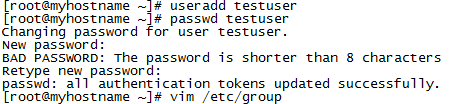
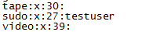
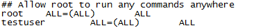

liunx中sudo服务相关知识
老样子 跟随课程进度
1）什么是sudo涅？
简单的说，sudo 是一种权限管理机制，管理员可以授权于一些普通用户去执行一些 root 执行的操作，而不需要知道 root 的密码。
严谨些说，sudo 允许一个已授权用户以超级用户或者其它用户的角色运行一个命令。当然，能做什么不能做什么都是通过安全策略来指定的。sudo 支持插件架构的安全策略，并能把输入输出写入日志。第三方可以开发并发布自己的安全策略和输入输出日志插件，并让它们无缝的和 sudo 一起工作。默认的安全策略记录在 /etc/sudoers 文件中。而安全策略可能需要用户通过密码来验证他们自己。也就是在用户执行 sudo 命令时要求用户输入自己账号的密码。如果验证失败，sudo 命令将会退出。
sudo暂时切换到超级用户模式以执行超级用户权限，提示输入密码时该密码为当前用户的密码，而不是超级账户的密码。不过有时间限制，Ubuntu默认为一次时长15分钟。
由于不需要超级用户的密码，部分类Unix系统甚至利用sudo使一般用户取代超级用户作为管理帐号，例如Ubuntu、[Mac OS X]。
2）sudo命令语法
sudo [-bhHpV] [-s ] [-u <用户>] [指令]
或sudo [-klv]
参数
-b 在后台执行指令。
-h 显示帮助。
-H 将HOME环境变量设为新身份的HOME环境变量。
-k 结束密码的有效期限，也就是下次再执行sudo时便需要输入密码。
-l 列出目前用户可执行与无法执行的指令。
-p 改变询问密码的提示符号。
-s 执行指定的shell。
-u <用户> 以指定的用户作为新的身份。若不加上此参数，则预设以root作为新的身份。
-v 延长密码有效期限5分钟。
-V 显示版本信息。
-S 从标准输入流替代终端来获取密码
3）基本配置
系统默认创建了一个名为 sudo 的组。只要把用户加入这个组，用户就具有了 sudo 的权限。
至于如何把用户加入 sudo 组，您可以直接编辑 /etc/group 文件，当然您得使用一个有 sudo 权限的用户来干这件事：
先创建用户并设置密码后，然后在sudo组中加入该用户，多个用户用逗号隔开。

添加内容如下：

我们把用户 testuser 添加到了 sudo 组中，所以当用户 testuser 登录后就可以通过 sudo 命令以 root 权限执行命令了！
但是，用testuser执行root权限的命令时会报错：
解决办法：
1)、切换到root用户下
普通用户切换到root用户下：sudo -i
root用户切换到普通用户下：su testuser
2)、添加sudo文件的写权限,命令是:
chmod u+w /etc/sudoers
3)、编辑sudoers文件
vi /etc/sudoers
找到这行 root ALL=(ALL) ALL,在他下面添加xxx ALL=(ALL) ALL (这里的xxx是你的用户名)

ps:这里说下你可以sudoers添加下面四行中任意一条
youuser ALL=(ALL) ALL
%youuser ALL=(ALL) ALL
youuser ALL=(ALL) NOPASSWD: ALL
%youuser ALL=(ALL) NOPASSWD: ALL
第一行:允许用户youuser执行sudo命令(需要输入密码).
第二行:允许用户组youuser里面的用户执行sudo命令(需要输入密码).
第三行:允许用户youuser执行sudo命令,并且在执行的时候不输入密码.
第四行:允许用户组youuser里面的用户执行sudo命令,并且在执行的时候不输入密码.
4)、撤销sudoers文件写权限,命令:
chmod u-w /etc/sudoers
这样普通用户就可以使用sudo了。
4、sudo命令的日志
在 ubuntu 中，sudo 的日志默认被记录在 /var/log/auth.log 文件中。当我们执行 sudo 命令时，相关日志都是会被记录下来的。比如下图中显示的就是一次执行 sudo 命令的日志。
在sudo于1980年前后被写出之前，一般用户管理系统的方式是利用su切换为超级用户。但是使用su的缺点之一在于必须要先告知超级用户的密码。